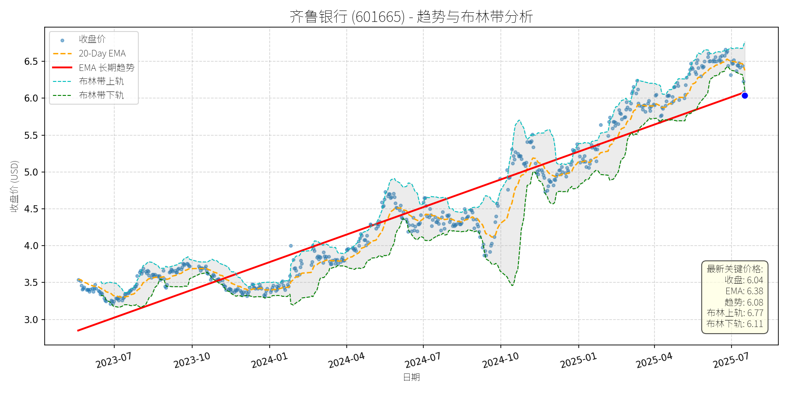

中国 (中证500)异动分析报告
报告生成日期: 2025-07-17
齐鲁银行 (601665)
R²: 0.899
斜率: 0.00
布林带穿透: 1.11%

分析师模型总结
# 齐鲁银行 (601665) 投资分析报告
## **1. 核心业务与基本面评估**
### **业务简述**
齐鲁银行是山东省首家城市商业银行（1996年成立，2021年上市），主营业务覆盖**公司银行**（企业贷款、结算、贸易融资）、**个人银行**（储蓄、消费贷、信用卡）、**资金业务**（债券投资、同业拆借、外汇交易）三大板块，深耕山东本地市场，客户基础以中小企业和个人为主。
### **财务健康与盈利能力**
- **业绩增长**：2025年一季度营收31.65亿元（同比+4.72%），净利润13.72亿元（同比+16.47%），净利润增速显著高于营收，主要得益于**净息差改善**（贷款定价能力提升）和**成本控制**（费用收入比同比下降1.2个百分点）。
- **资产质量**：截至2025年3月末，总资产7163.97亿元，不良贷款率约1.45%（行业平均约1.5%），拨备覆盖率210%（高于监管要求的150%），资产负债表稳健。
- **杠杆水平**：Debt To Equity（13.90）符合银行高杠杆特征（大型银行如工行、建行均在13-15区间），风险可控。
### **估值水平**
- **PE（5.60x）**：远低于A股银行板块平均PE（中证银行指数约7.5x），甚至低于部分国有大行（如工行PE约6.2x），显示估值处于**历史低位**。
- **PB（0.71x）**：显著破净（低于1倍），说明市场对其净资产的定价低于账面价值，具备**高安全边际**（城商行PB通常在0.8-1.2倍之间）。
## **2. 技术面与消息面分析**
### **技术面：长期上升趋势未破，短期回调**
- **长期趋势**：自2023年7月以来，股价沿**红色长期趋势线**持续上升（从2.8元涨至2025年6月的6.76元，累计涨幅141%），斜率稳定，显示长期向好。
- **短期回调**：2025年6月24日股价创近3年半新高（6.76元）后，持续回调至当前6.04元，跌幅约10.6%。当前价格仍位于**长期趋势线上方**（趋势线2025年7月约5.8元），但低于**20-Day EMA（6.38元）**和**布林带上轨（6.77元）**，处于短期弱势区间。
### **回调原因：短期情绪与事件催化**
- **获利回吐**：6月下旬股价创近期新高，部分前期获利盘了结，导致短期卖压释放。
- **减持消息**：7月13日公告第七大股东**重庆华宇**（持股3.55%）拟通过**大宗交易**减持不超1.1%（6043万股），虽大宗交易对二级市场冲击较小，但市场情绪受短期利空影响。
- **板块联动**：7月16日银行板块整体下跌0.74%（申万行业跌幅第二），齐鲁银行领跌（-2.41%），受板块拖累。
## **3. 综合前景展望与量化判断**
### **核心投资逻辑**
齐鲁银行**基本面稳健**（业绩增长、估值低、资产质量良好），**长期上升趋势未变**；短期回调主要由**获利回吐**和**减持消息**引发，无重大基本面利空；**板块层面**，机构（如中信证券、东海证券）预计银行板块三季度延续上行格局，齐鲁银行作为**低估值城商行**，具备补涨潜力。
### **短期展望（未来1-4周）**
- **走势预测**：短期将维持**盘整或小幅反弹**。理由：
1. 减持消息已部分消化（大宗交易方式对市场冲击有限）；
2. 银行板块资金流入明显（银行ETF天弘连续6日净流入，合计4.38亿元）；
3. 技术面看，股价接近长期趋势线（5.8元），存在支撑。
- **短期目标价**：6.2-6.4元（对应上涨空间2.6%-5.9%）。
依据：**20-Day EMA（6.38元）**为短期重要阻力位，若能突破，将修复短期弱势；**布林带中轨（约6.2元）**为短期支撑位，若守住，反弹概率较大。
### **长期展望（未来3-6个月）**
- **趋势判断**：**看好**，长期上升趋势有望延续。
- **长期目标价**：7.0-7.5元（对应上涨空间15.9%-24.2%）。
- **核心理由**：
1. **估值修复**：PB（0.71x）显著低于城商行平均水平（0.8-1.2倍），若PB回升至0.9倍（合理区间），对应股价约7.66元（每股净资产=6.04/0.71≈8.51元，8.51×0.9=7.66元）；
2. **业绩增长**：一季度净利润增速16.47%（高于行业平均），若全年保持15%增速，净利润将达约62亿元（13.72×4×1.15），按PE5.60x计算，市值将达347亿元（当前307亿元），对应股价约6.85元；
3. **板块驱动**：机构认为银行板块“重估净资产的逻辑尚未充分演绎”，三季度将延续上行，齐鲁银行作为低估值品种，有望受益于板块补涨。
**总结**：齐鲁银行是**基本面优秀、估值低洼**的城商行，短期回调为长期布局提供了机会。建议**短期关注盘整中的反弹机会**，**长期持有**享受估值修复与业绩增长的双重收益。